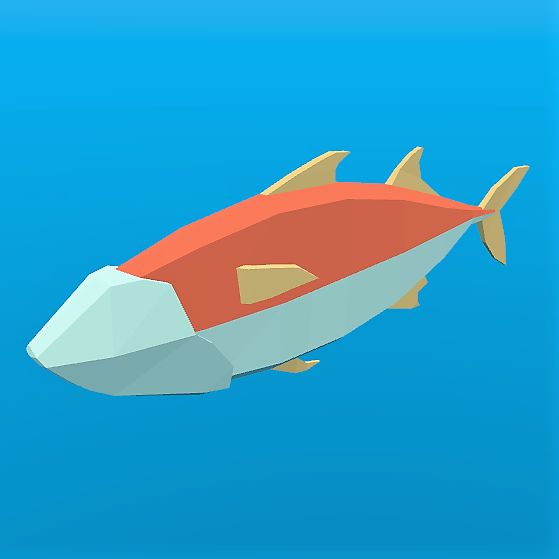
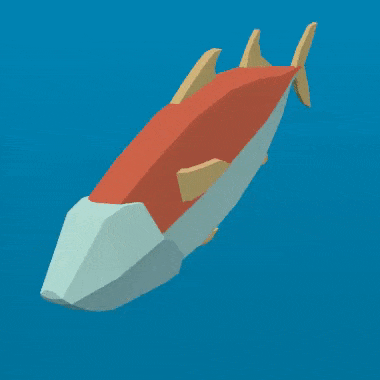
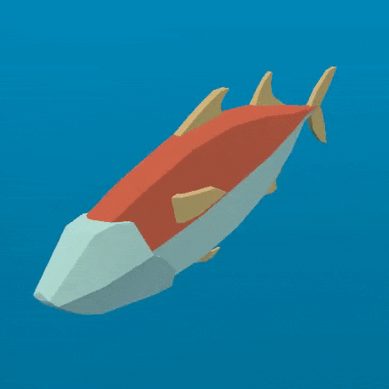
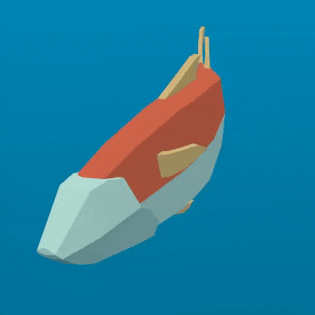
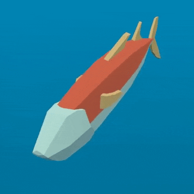
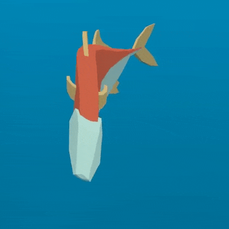
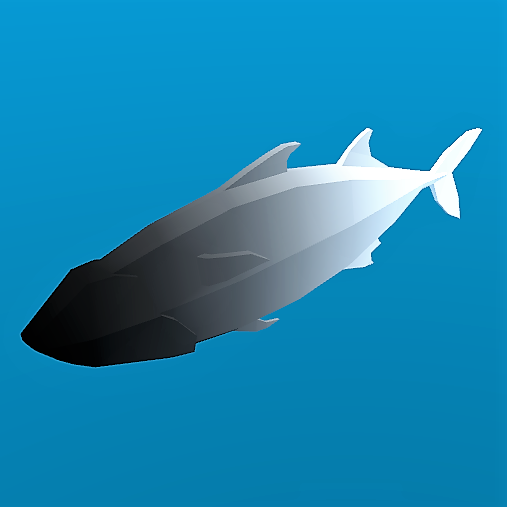
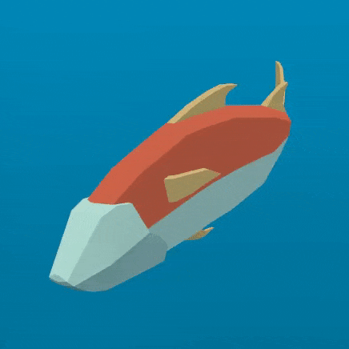

Đang cập nhật
Nội dung trang này chưa được cập nhật cho Godot
4.7
và có thể đã lỗi thời. Nếu bạn biết cách cải thiện trang này hoặc xác nhận
được rằng nó vẫn đúng, hãy gửi một pull request (bản tiếng Anh).
Tạo hoạt ảnh cho hàng nghìn con cá với MultiMeshInstance3D
Bài hướng dẫn này tìm hiểu một kỹ thuật được dùng trong trò chơi ABZU để kết xuất và tạo hoạt ảnh cho hàng nghìn con cá bằng vertex animation và instancing mesh tĩnh.
Trong Godot, điều này có thể thực hiện bằng một Shader tùy chỉnh và một MultiMeshInstance3D. Với kỹ thuật sau, bạn có thể kết xuất hàng nghìn đối tượng có hoạt ảnh, ngay cả trên phần cứng cấu hình thấp.
Chúng ta sẽ bắt đầu bằng việc tạo hoạt ảnh cho một con cá. Sau đó, chúng ta sẽ xem cách mở rộng hoạt ảnh đó cho hàng nghìn con cá.
Tạo hoạt ảnh cho một con cá
Chúng ta sẽ bắt đầu với một con cá duy nhất. Tải model cá của bạn vào một MeshInstance3D và thêm một ShaderMaterial mới.
Đây là con cá chúng ta sẽ dùng cho các hình minh họa, bạn có thể dùng bất kỳ model cá nào bạn thích.

Ghi chú
Model cá trong bài hướng dẫn này được tạo bởi QuaterniusDev và được chia sẻ theo giấy phép creative commons. CC0 1.0 Universal (CC0 1.0) Public Domain Dedication https://creativecommons.org/publicdomain/zero/1.0/
Thông thường, bạn sẽ dùng xương (bone) và một Skeleton3D để tạo hoạt ảnh cho đối tượng. Tuy nhiên, xương được tính hoạt ảnh trên CPU nên bạn phải tính hàng nghìn phép toán mỗi frame, và việc có hàng nghìn đối tượng trở nên bất khả thi. Bằng cách dùng vertex animation trong vertex shader, bạn tránh được việc dùng xương và thay vào đó có thể tính toàn bộ hoạt ảnh chỉ trong vài dòng code và hoàn toàn trên GPU.
Hoạt ảnh sẽ gồm bốn chuyển động chính:
Chuyển động lắc sang hai bên
Chuyển động xoay quanh tâm con cá
Chuyển động sóng lan dọc thân
Chuyển động vặn xoắn lan dọc thân
Toàn bộ code cho hoạt ảnh sẽ nằm trong vertex shader, với các uniform điều khiển mức độ chuyển động. Chúng ta dùng uniform để điều khiển cường độ chuyển động để bạn có thể tinh chỉnh hoạt ảnh trong trình chỉnh sửa và thấy kết quả theo thời gian thực mà shader không cần biên dịch lại.
Tất cả chuyển động sẽ được tạo bằng các sóng cosin áp dụng lên VERTEX trong không gian model. Chúng ta muốn các đỉnh nằm trong không gian model để chuyển động luôn tương đối với hướng của con cá. Ví dụ, chuyển động lắc ngang sẽ luôn di chuyển con cá qua lại theo hướng trái-phải của chính nó, thay vì trên trục x theo hướng của thế giới.
Để điều khiển tốc độ hoạt ảnh, chúng ta sẽ bắt đầu bằng việc định nghĩa biến thời gian riêng dựa trên TIME.
//time_scale is a uniform float
float time = TIME * time_scale;
Chuyển động đầu tiên chúng ta sẽ triển khai là chuyển động lắc sang hai bên. Có thể tạo nó bằng cách dịch VERTEX.x một lượng bằng cos của TIME. Mỗi lần mesh được kết xuất, tất cả các đỉnh sẽ dịch sang bên một lượng cos(time).
//side_to_side is a uniform float
VERTEX.x += cos(time) * side_to_side;
Hoạt ảnh thu được sẽ trông giống như thế này:

Tiếp theo, chúng ta thêm chuyển động xoay. Vì con cá được đặt tâm tại (0, 0), tất cả những gì cần làm là nhân VERTEX với một ma trận xoay để nó xoay quanh tâm con cá.
Chúng ta tạo ma trận xoay như sau:
//angle is scaled by 0.1 so that the fish only pivots and doesn't rotate all the way around
//pivot is a uniform float
float pivot_angle = cos(time) * 0.1 * pivot;
mat2 rotation_matrix = mat2(vec2(cos(pivot_angle), -sin(pivot_angle)), vec2(sin(pivot_angle), cos(pivot_angle)));
Sau đó áp dụng nó trên các trục x và z bằng cách nhân nó với VERTEX.xz.
VERTEX.xz = rotation_matrix * VERTEX.xz;
Khi chỉ áp dụng chuyển động xoay, bạn sẽ thấy kết quả giống như thế này:

Hai chuyển động tiếp theo cần lan dọc theo xương sống con cá. Để làm điều đó, chúng ta cần một biến mới, body. body là một số thực có giá trị 0 ở đuôi cá và 1 ở đầu cá.
float body = (VERTEX.z + 1.0) / 2.0; //for a fish centered at (0, 0) with a length of 2
Chuyển động tiếp theo là một sóng cosin di chuyển dọc chiều dài con cá. Để nó di chuyển dọc xương sống, chúng ta dịch đầu vào của cos theo vị trí dọc xương sống, chính là biến body đã định nghĩa ở trên.
//wave is a uniform float
VERTEX.x += cos(time + body) * wave;
Đoạn này trông rất giống chuyển động lắc ngang đã định nghĩa ở trên, nhưng ở đây, nhờ dùng body để dịch cos, mỗi đỉnh dọc xương sống có một vị trí khác nhau trên sóng, khiến nó trông như có một làn sóng đang di chuyển dọc thân cá.

Chuyển động cuối cùng là vặn xoắn, tức một chuyển động lăn lan dọc xương sống. Tương tự như chuyển động xoay, trước tiên chúng ta tạo một ma trận xoay.
//twist is a uniform float
float twist_angle = cos(time + body) * 0.3 * twist;
mat2 twist_matrix = mat2(vec2(cos(twist_angle), -sin(twist_angle)), vec2(sin(twist_angle), cos(twist_angle)));
Chúng ta áp dụng phép xoay trên các trục xy để con cá trông như đang lăn quanh xương sống của nó. Để điều này hoạt động, xương sống của cá cần được đặt tâm trên trục z.
VERTEX.xy = twist_matrix * VERTEX.xy;
Đây là con cá khi áp dụng vặn xoắn:

Nếu áp dụng lần lượt tất cả các chuyển động này, chúng ta sẽ có một chuyển động uyển chuyển như thạch.

Cá bình thường bơi chủ yếu bằng nửa sau thân. Do đó, chúng ta cần giới hạn các chuyển động lan dọc thân ở nửa sau con cá. Để làm điều này, chúng ta tạo một biến mới, mask.
mask là một số thực đi từ 0 ở phần đầu con cá đến 1 ở phần cuối, dùng smoothstep để điều khiển điểm mà tại đó diễn ra chuyển tiếp từ 0 sang 1.
//mask_black and mask_white are uniforms
float mask = smoothstep(mask_black, mask_white, 1.0 - body);
Dưới đây là hình con cá với mask được dùng làm COLOR:

Với chuyển động sóng, chúng ta nhân chuyển động với mask để giới hạn nó ở nửa sau.
//wave motion with mask
VERTEX.x += cos(time + body) * mask * wave;
Để áp dụng mask cho chuyển động vặn xoắn, chúng ta dùng mix. mix cho phép trộn vị trí đỉnh giữa một đỉnh được xoay hoàn toàn và một đỉnh không xoay. Chúng ta cần dùng mix thay vì nhân mask với VERTEX đã xoay vì chúng ta không cộng chuyển động vào VERTEX mà đang thay thế VERTEX bằng phiên bản đã xoay. Nếu nhân nó với mask, con cá sẽ bị thu nhỏ lại.
//twist motion with mask
VERTEX.xy = mix(VERTEX.xy, twist_matrix * VERTEX.xy, mask);
Kết hợp bốn chuyển động lại với nhau cho chúng ta hoạt ảnh cuối cùng.

Hãy thử nghịch các uniform để thay đổi chu kỳ bơi của con cá. Bạn sẽ thấy có thể tạo ra rất nhiều kiểu bơi khác nhau chỉ với bốn chuyển động này.
Tạo một đàn cá
Godot giúp việc kết xuất hàng nghìn đối tượng giống nhau trở nên dễ dàng bằng node MultiMeshInstance3D.
Node MultiMeshInstance3D được tạo và sử dụng giống như cách bạn tạo node MeshInstance3D. Trong bài hướng dẫn này, chúng ta sẽ đặt tên node MultiMeshInstance3D là School, vì nó sẽ chứa một đàn cá.
Khi đã có MultiMeshInstance3D, hãy thêm một MultiMesh, rồi thêm Mesh của bạn cùng shader ở trên vào MultiMesh đó.
MultiMesh vẽ Mesh của bạn với ba thuộc tính bổ sung cho mỗi instance: Transform (xoay, tịnh tiến, tỉ lệ), Color và Custom. Custom được dùng để truyền vào 4 biến đa dụng bằng một Color.
instance_count chỉ định số instance của mesh mà bạn muốn vẽ. Hiện tại, hãy để instance_count ở 0 vì bạn không thể thay đổi bất kỳ tham số nào khác khi instance_count lớn hơn 0. Chúng ta sẽ đặt instance count bằng GDScript sau.
transform_format chỉ định transform được dùng là 3D hay 2D. Trong bài hướng dẫn này, hãy chọn 3D.
Với cả color_format và custom_data_format, bạn có thể chọn giữa None, Byte và Float. None nghĩa là bạn sẽ không truyền dữ liệu đó (biến COLOR cho mỗi instance, hoặc INSTANCE_CUSTOM) vào shader. Byte nghĩa là mỗi số cấu thành màu bạn truyền vào sẽ được lưu bằng 8 bit, còn Float nghĩa là mỗi số sẽ được lưu bằng một số thực dấu phẩy động (32 bit). Float chậm hơn nhưng chính xác hơn, Byte tốn ít bộ nhớ và nhanh hơn, nhưng bạn có thể thấy một số lỗi hiển thị (artifact).
Bây giờ, đặt instance_count bằng số lượng cá mà bạn muốn có.
Tiếp theo, chúng ta cần đặt transform cho từng instance.
Có hai cách để đặt transform cho từng instance của MultiMesh. Cách thứ nhất thực hiện hoàn toàn trong trình chỉnh sửa và được mô tả trong bài hướng dẫn MultiMeshInstance3D.
Cách thứ hai là lặp qua tất cả các instance và đặt transform của chúng trong code. Dưới đây, chúng ta dùng GDScript để lặp qua tất cả các instance và đặt transform của chúng tại một vị trí ngẫu nhiên.
for i in range($School.multimesh.instance_count):
var position = Transform3D()
position = position.translated(Vector3(randf() * 100 - 50, randf() * 50 - 25, randf() * 50 - 25))
$School.multimesh.set_instance_transform(i, position)
Chạy script này sẽ đặt các con cá tại các vị trí ngẫu nhiên trong một hộp quanh vị trí của MultiMeshInstance3D.
Ghi chú
Nếu hiệu năng là vấn đề với bạn, hãy thử chạy scene với ít cá hơn.
Bạn có để ý rằng tất cả các con cá đều ở cùng một vị trí trong chu kỳ bơi không? Điều đó khiến chúng trông rất máy móc. Bước tiếp theo là cho mỗi con cá một vị trí khác nhau trong chu kỳ bơi để cả đàn trông tự nhiên hơn.
Tạo hoạt ảnh cho một đàn cá
Một trong những lợi ích của việc tạo hoạt ảnh cho cá bằng các hàm cos là chúng được điều khiển bởi một tham số duy nhất, time. Để mỗi con cá có một vị trí riêng trong chu kỳ bơi, chúng ta chỉ cần dịch time.
Chúng ta làm điều đó bằng cách cộng giá trị custom của từng instance INSTANCE_CUSTOM vào time.
float time = (TIME * time_scale) + (6.28318 * INSTANCE_CUSTOM.x);
Tiếp theo, chúng ta cần truyền một giá trị vào INSTANCE_CUSTOM. Chúng ta làm điều đó bằng cách thêm một dòng vào vòng lặp for ở trên. Trong vòng lặp for, chúng ta gán cho mỗi instance một bộ bốn số thực ngẫu nhiên để sử dụng.
$School.multimesh.set_instance_custom_data(i, Color(randf(), randf(), randf(), randf()))
Giờ đây tất cả các con cá đều có vị trí riêng trong chu kỳ bơi. Bạn có thể tạo thêm chút cá tính cho chúng bằng cách dùng INSTANCE_CUSTOM để khiến chúng bơi nhanh hơn hoặc chậm hơn bằng cách nhân với TIME.
//set speed from 50% - 150% of regular speed
float time = (TIME * (0.5 + INSTANCE_CUSTOM.y) * time_scale) + (6.28318 * INSTANCE_CUSTOM.x);
Bạn thậm chí có thể thử nghiệm thay đổi màu của từng instance theo cùng cách bạn đã thay đổi giá trị custom của từng instance.
Một vấn đề bạn sẽ gặp phải lúc này là các con cá có hoạt ảnh nhưng không di chuyển. Bạn có thể di chuyển chúng bằng cách cập nhật transform của từng instance cho mỗi con cá ở mỗi frame. Mặc dù làm vậy sẽ nhanh hơn việc di chuyển hàng nghìn MeshInstance3D mỗi frame, nhưng có lẽ vẫn sẽ chậm.
Trong bài hướng dẫn tiếp theo, chúng ta sẽ tìm hiểu cách dùng GPUParticles3D để tận dụng GPU và di chuyển từng con cá riêng lẻ mà vẫn hưởng lợi ích của instancing.